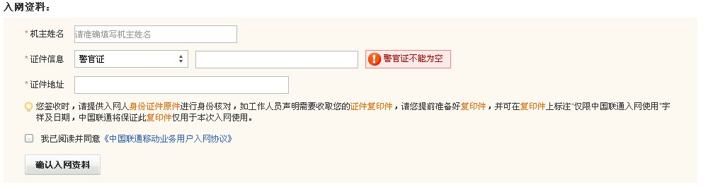

添加 : 点击添加按钮，商品类型选择合约机商品的（types=6），显示号码段下拉列表， 号码选择类型下拉列表（1：只选普通、2：只选靓号、3：全部可选）， 合约到期前几个月可以购买（输入框中默认值3，输入框后要有提示：0表示合同到期后才能购买，3表示合同到期前3个月可以购买该值需大于等于0，提交时需做验证）
修改： 同添加。
添加: 点击添加按钮，进入添加页面，页面内容：号码段名称输入框， 点击提交按钮，需验证该号码段是否已经存在，若不存在，将号码段名称、创建人、创建时间写入到数据库中。若存在，则 给出提示信息‘该号码段已经存在，请重新输入！’。
修改: 同添加，需更新最新更新时间。
删除：选中一条号码段，点击删除按钮，判断该号码段下是否有号码，若有，则不能删除，并给出提示‘该号码段下有号码存在，不能删除！’。
查询： 根据手机号码、状态、号码段、是否靓号为查询条件， 以列表的形式进行展示，列表项：手机号、所属号码段、状态、是否靓号、创建人、创建时间、最后修改时间。默认列表中没有数据。
导入号码：该功能用于将excel表格中的号码导入到系统中。点击导入号码按钮，进入导入号码页面，页面内容：号码段下拉列表、文件上传输入框。 导入格式需更新，边上备注：0普通号码、1靓号 选择文件后， 点击提交按钮，系统给出相应的等待页面，在导入过程中，需要对导入的号码做两个验证：
1、验证号码是否存在，验证需要验证整个号码表。若已存在，则不能导入，并将该号码与不能导入的原因放入到Map中。
2、验证号码格式是否正确，若不正确，则不能导入，并将该号码与不能导入的原因放入到Map中。
3、excel中新增一列：是否靓号，读取该列值时，若是非0或者1，则将错误写入map中。
导入完成后，若Map中有数据，则将该数据显示在表单的上部，格式为： 号码——不能导入的原因。若没有数据，则在表单上部显示导入成功。用户可以自行选择在原有页面继续导入号码，也可以去其他页面。系统不做自动跳转。
添加： 点击添加按钮，进入添加页面，页面内容： 号码输入框、号码段下拉列表、是否靓号下拉列表(0:普通号，1：靓号)。
点击确定按钮，需对添加的号码做两个验证：
1、验证号码是否存在，验证需要验证整个号码表。若已存在，则不能添加，并给出提示信息——‘号码已存在，请重新添加！’
2、验证号码格式是否正确，若不正确，则不能添加，并给出提示信息——‘号码格式错误，请重新添加！’。
若验证通过，则将号码、号码段ID、号码状态、是否靓号、创建时间写入到phone_number表中
启用：选择一个号码，点击启用按钮，判断该号码是否处于禁用状态，若是，则将该号码置为未用状态，若不是，则不能启用，并给出相应的提示信息。
禁用：选择一个号码，点击禁用按钮，判断该号码是否处于未用状态，若是，则将该号码置为禁用状态，若不是，则不能禁用，并给出相应的提示信息。
删除：选择一个号码，点击删除按钮，判断该号码是否处于未用或者禁用状态，若是，则可以将该号码删除，若不是，则不能删除，并给出相应的提示信息。
------------新增内容 开始------------------------
新增
点击新增按钮，进入新增页面，页面内容：机主姓名、机主原有号码、老合约到期时间。点击提交，需验证：
该老号码在表中是否已存在，若已存在，则不能添加，并给出提示信息。验证通过后，将机主姓名、机主原号码、老合约到期时间、创建人、创建时间写入到数据库中。
删除
选中一条老用户记录，点击删除按钮，判断该用户是否购买了新合约(is_buy_new = 1)，若已购买，则不能删除，并给出相应的提示信息。
导入
点击导入按钮，进入导入页面，页面内容： 文件上传输入框。 点击提交按钮，需做如下验证：
1、上传的文件是否是excel文件，若不是，则不能提交，并给出相应的提示信息。 2、判断手机号码是否在（phone_old_number）表中已存在，若已存在，则不能写入到数据库中。将号码+错误信息放入map中。验证完后，若Map中有值，将Map的信息展示在页面上。
查询
通过对orderNew进行查询，以订单编号、商品编号、订单导出批次、审核状态、商品名、用户名、ICCID(该列取消)、是否导出、新老用户为查询条件，以列表的形式进行展示，
列表项：订单编号、买家用户名、金额、数量、PV、积分、商品名、付款方式、创建日期、导出批次号、审核状态、商品编号、 物流编号、物流公司、是否发货、机主姓名、所选号码、身份证、ICCID(该列取消)、是否导出、新老用户
审核状态增加对审核未通过的查询
审核
选中一个订单，点击审核按钮，判断该订单的审核状态是否处于未审核（orderNew.audit_status=0），若不是，则不能审核，并给出提示信息——‘该订单已审核过，不能再次审核！’
若是，则将order.audit_status置为1，将orderNew.audit_status置为1，状态改变需放在同一个事务中。
审核不通过
选中一个订单，点击审核不通过按钮，需做如下操作：
1、若该订单处于未审核状态，则直接可以将订单的审核状态置为审核不通过。 2、若该订单已处于审核通过状态，则需判断该订单的导出状态是否是未导出，若不是，则不能操作，并给出提示信息。 若是，则修改订单的审核状态为审核不通过。 3、修改审核状态需要修改orders及ordersNew，将操作放入一个事务中操作。
修改ICCID该功能弃用
选中一个订单，点击修改ICCID按钮，需做如下验证：
1、判断该定单是否是合约机新用户（phone_newold_user=1），若不是，则不能修改，并给出相应的提示信息。 1、判断该订单的orderNew.audit_status是否为1，若不为1，则不能输入ICCID，并给出提示信息——‘订单需审核后才可以输入ICCID！’ 2、判断该订单是否未导出（orderNew.is_export=0），若不是，则不能修改，并给出相应的提示信息——‘该订单已被导出，请联系相关的商务！’验证通过后，弹出div层，div层内容：ICCID编辑框。 点击提交按钮，需验证合约机订单中该ICCID是否唯一，若不唯一，不能提交成功，并给出相应的提示信息。 若是，则写入到数据库中。
强制修改ICCID该功能弃用
备注：该功能是由相关的商务人员操作。
选中一个订单，点击强制修改按钮，需做如下验证：
判断该定单是否是合约机新用户（phone_newold_user=1），若不是，则不能修改，并给出相应的提示信息。验证通过，弹出div层，div层内容：ICCID编辑框。点击提交按钮，验证合约机订单中该ICCID是否唯一，若不唯一，不能提交成功，并给出相应的提示信息。 若是，则写入到数据库中。
导出订单
输入商品编号（必填）与导出批次号（必填），点击导出订单按钮，需做如下验证：
验证输入的商品编号是否属于合约机商品，若不是，则不能导出。验证通过后，可以将该批次、该商品的订单导出。
撤销导出
选中一条订单，点击撤销导出按钮，将订单的导出状态置为未导出，导出批次置为0。 若该订单已经被拉单且没有运单号，则需要将拉单状态改为未拉单，订单批次置为0。
查询
查询 orderNew表，根据商品编号进行查询，默认显示以当前时间之前， 审核通过且未导出的订单（audit_status=1 && is_export=0 ） （按照商品、批次、合约机新老用户进行分组），以列表的形式进行展示，列表内容：
商品编号、商品名称、订单数量、导出状态、导出批次号（若为0，则显示未生成批次号）、 合约机新老用户（若是新用户，只处理有ICCID的订单——这个条件去掉，无需去管是否有ICCID）、 操作（生成导出批次/导出，若未生成批次的，显示生成导出批次按钮，若已有批次号，则显示导出订单按钮）。
生成导出批次（只处理审核通过的订单）
点击生成导出批次按钮，查询orderNew表， 根据商品编号、新老用户， 获取与该商品相关的订单中最大的导出批次号，在该导出批次号基础上加1，作为最新的导出批次号， 将这个最新的导出批次号写入到订单中（orderNew.contract_phone_batch），需注意以下两点：
1、查询最大导出批次时，需要区分新老用户。
2、更新导出批次时，区分新老用户，只更新审核通过的、未导出的、有ICCID的(这个条件去掉)、有运单号(这个条件去掉)的订单。
导出订单
点击导出订单按钮，导出与该商品，该批次相关的订单，并将这些订单的导出状态orderNew.is_export置为1。
可拉单的订单需要加入两个条件：
1、orderNew.audit_status=1，即，没有审核通过的订单不可以拉单。（列表展示和生成批次都要加上这个条件）
2、is_export=1，即，只有已导出的订单才能拉单（备注：普通订单默认都是已导出的，只有合约机的订单在商务未导出之前是未导出）
拉单时，需判断该商品是否为合约机商品，若是，需要增加手机号码、机主姓名、证件类型、证件号、证件地址、ICCID、 合约机新老用户这6项，并在原基础增加按照新老用户进行顺序排序。 若不是，则按原来的表格进行导出。
在原基础上，增加对是否拉单的判断，若未拉单，则不能导入该条订单。 将订单号和错误信息放入map中，在导入完成后，在页面上显示错误信息——‘订单号XXXX, 没有拉单，不能导入’
页面内容参考【导入物流】， excel的格式：订单号、ICCID，页面上参考导入物流，放一张格式图片。
文件上传时，需做如下处理：
1、上传的是否是excel文件，若不是，则不能上传，并给出相应的提示信息。 2、上传的excel文件中，需做如下验证： i)若该订单是合约机新用户： 判断订单是否未导出(is_export=0)，若已导出，则不能导入ICCID，并将订单号及错误信息放入Map中，错误信息：‘该订单商务已导出发给联通！’ 需验证iccid是否已经存在，若没有存在，则可以写入，若已存在，则写入失败。 ii)若该订单是合约机老用户，则不能导入，并将订单号与错误信息放入map中，错误信息：‘该订单为合约机老用户！’ 写入成功的订单，将订单号及ICCID放入一个map中。 若写入失败，将订单号及ICCID+错误信息放入另一个map中。上传完成后，跳转到结果页面，该页面分两列显示，一列显示导入成功的信息，一列显示导入失败的信息。
判断订单中的商品是否是合约机商品，若不是，则按原流程进行。
若是，判断是新用户还是老用户（在购物车的action时，需增加标识字段以此来区分是新用户还是老用户,若为空，则按新用户处理）
若是新用户，页面显示选择号码div层，div层内容如下：
该内容只做示意，具体有潘磊来决定。
根据商品的号码选择类型，
1、若是1，从该商品绑定的号码段中的号码里,随机选出8到10个普通的号码，让用户选择，用户可以刷新，每次刷新，刷出来的号码都是普通号。
2、若是2，从该商品绑定的号码段中的号码里,随机选出8到10个靓号，让用户选择，用户可以刷新，每次刷新，刷出来的号码都是靓号。
3、若是3，从该商品绑定的号码段中的号码里,随机选出8到10个号码（不需要去管是否靓号），让用户选择，用户可以刷新。
凡是合约机商品的数量，只能是1，不能修改。
若是老用户，显示老用户的号码，不显示div层。
在该页面中，号码选择表下是入网资料的填写，内容为：
1、机主姓名（必填，若是老用户，则显示验证页面中用户填写的姓名） 2、证件信息中，默认是身份证，图中的警官证改为身份证号码，身份证号码（必填） 3、证件地址（必填） 4、提示信息：请完整填写机主身份证上的姓名及身份证号码。付款成功后，客服需要收取机主的身份证复印件进行核实，请您提前准备好复印件。 此复印件仅用于本次入网使用。 4、联通入网协议 5、我已阅读并同意《中国联通移动业务用户入网协议》（单选按钮，默认勾选）
订单提交时，在原有的基础上需增加如下几个判断：
1、用户是否勾选阅读并同意入网协议（默认是选中状态），若没有勾选，则不能提交订单。
2、验证机主姓名、身份证号码、证件地址是否都已填写，若没有，则不能提交订单。
3、验证身份证号码的格式是否正确，若不正确，则不能提交订单。
若是老用户，还需增加以下三个判断：
1、机主姓名与手机号码去表phone_old_number表验证，如果不存在，则给出提示。
2、该用户的合约到期时间与当前时间是否在三个月内,精确到月即可，若不是，则不能购买新合约，并给出相应的提醒。 例如：过期时间是8月1日，则6月1日开始就可以购买了。过期时间是8月31日，6月1日开始也可以购买了（该条判断废除）
3、当item.end_month=0，则该用户的合约到期时间与当前时间比较，只有合约到期的才能购买。
4、当item.end_month>0，则该用户的合约到期时间与当前时间的月份数是否小于商品的到期购买月份值，若不是，则不能提交，并给出相应的提示信息。 （如item.end_month=3,过期时间是8月1日，则6月1日开始就可以购买了。过期时间是8月31日，6月1日开始也可以购买了）
5、当item.end_month<0，给出错误提示
6、该用户是否已购买过新合约（is_buy_new=1），若是，则不能再次购买新合约，并给出相应的提醒。
验证通过后，判断该订单是新用户还是老用户，
若是新用户：在原基础上，将手机号码、手机号码ID、机主姓名、证件号、证件地址，审核状态（audit_status=0）、写入到order中，并且跟该订单绑定的号码置为已用状态（phone_number.status=2）。 以上操作需放在同一个事务中进行。
若是老用户：在原基础上，将手机号码、手机号码ID、机主姓名、证件号、证件地址，审核状态（audit_status=0）、phone_newold_user=2写入到order中，并将phone_old_number.is_buy_new置为1。 以上操作需放在同一个事务中进行。
用户点击前端广告，进入到老用户信息验证页面，页面内容：机主姓名、手机号码。 点击验证按钮，需做如下验证：
1、机主姓名与手机号码去表phone_old_number表验证，如果不存在，则给出提示。
2、该用户的合约到期时间与当前时间是否在三个月内,精确到月即可，若不是，则不能购买新合约，并给出相应的提醒。
4、该用户是否已购买过新合约（is_buy_new=1），若是，则不能再次购买新合约，并给出相应的提醒。
验证通过后，页面下方显示购买按钮，用户点击购买按钮，进入购物车页面，链接中加上老用户标识字段、姓名、手机号。
用户点击前端红米手机广告，进入到老用户信息验证页面，页面内容：机主姓名、手机号码。 点击验证按钮，需做如下验证：
1、机主姓名与手机号码去表phone_old_number表验证，如果不存在，则给出提示。
2、判断该用户的合约是否已到期，若没有到期，则不能购买新合约，并给出相应的提醒。
3、该用户是否已购买过新合约（is_buy_new=1），若是，则不能再次购买新合约，并给出相应的提醒。
验证通过后，页面下方显示购买按钮，用户点击购买按钮，进入购物车页面，链接中加上老用户标识字段、姓名、手机号。
用户在支付成功后，将order中该条记录写入到orderNew中，若是老用户，ICCID置为NO_ICCID。 插入时，若是合约机订单，将is_export置为0
用户点击取消订单，在原有的基础上，判断是否为合约机订单，若是，则判断该订单是否是新用户，若是，则将该订单对应的手机号码置为未用状态(phone_number.status=1)。 若不是，需将对应的老用户置为未购买状态（phone_old_number.is_buy_new=0）
---------新增内容 结束-----------
查找订单类型为合约机的订单，若超过30分钟，则该订单自动取消掉，同时，若是新用户，则将该订单对应的号码置为未用状态（phone_number.status = 1）， 若是老用户，则将该订单对应的phone_old_number.is_buy_new置为0。
| 数据成员名称 | 数据成员类型 | 是否为空 | 说明 |
| types | int | 否 | 商品类型 1普通商品、2手机短信消费、3秒杀、4活动商品、5链接商品、6合约机， 默认1 |
| pnsid | int | 所属号码段 | |
| choose_number_type | int | 号码选择类型，1:只选普通，2：只选靓号，3：全部可选，typese=6有效 | |
| end_month | int | 合约到期几个月可以购买，如：0表示合同到期后才能购买，3表示合同到期前3个月可以购买，types=6有效 |
| 数据成员名称 | 数据成员类型 | 是否为空 | 说明 |
| pnsid | int | 否 | ID,主键，自增 |
| name | varchar(50) | 否 | 号码段名称 |
| created_user | varchar(50) | 否 | 创建人 |
| created_date | datetime | 否 | 创建时间 |
| updated_date | datetime | 最后更新时间 |
| 数据成员名称 | 数据成员类型 | 是否为空 | 说明 |
| pnid | int | 否 | ID,主键，自增 |
| phone_number | varchar(50) | 否 | 号码 |
| pnsid | int | 否 | 所属号码段ID |
| status | int | 否 | 状态：1、未用 2、已用 3、禁用,默认为1 |
| is_good_number | int | 否 | 是否靓号，0：普通号， 1：靓号，默认为0 |
| created_user | varchar(50) | 否 | 创建人 |
| created_date | datetime | 否 | 创建时间 |
| updated_date | datetime | 最后更新时间 |
| 数据成员名称 | 数据成员类型 | 是否为空 | 说明 |
| types | int | 否 | 订单类型：1实物发货、2手机短信消费、3秒杀、4活动商品、5链接商品、6合约机商品，默认为1，根据商品表types来 |
| phone_number | varchar(50) | 手机号码，该字段在types=6才有效 | |
| pnid | int | 手机号码ID，该字段在types=6才有效，若是老用户，存入的ponid | |
| phone_user | varchar(50) | 机主姓名，该字段在types=6才有效 | |
| credentials_type | int | 证件类型，1、身份证，默认1，该字段在types=6才有效 | |
| credentials_no | varchar(50) | 证件号码，该字段在types=6才有效 | |
| credentials_address | varchar(500) | 证件地址，该字段在types=6才有效 | |
| audit_status | int | 否 | 审核状态： 0：未审核， 1：已审核，2: 审核不通过。默认为1，若是合约机商品，则为0。 |
| phone_newold_user | int | 合约机新老用户： 1：新用户 2：老用户，默认为1 |
| 数据成员名称 | 数据成员类型 | 是否为空 | 说明 |
| types | int | 否 | 订单类型：1实物发货、2手机短信消费、3秒杀、4活动商品、5链接商品、6合约机商品，默认为1，根据商品表types来 |
| phone_number | varchar(50) | 手机号码，该字段在types=6才有效 | |
| pnid | int | 手机号码ID，该字段在types=6才有效，若是老用户，存入的是ponid | |
| phone_user | varchar(50) | 机主姓名，该字段在types=6才有效 | |
| credentials_type | int | 证件类型，1、身份证，默认为1，该字段在types=6才有效 | |
| credentials_no | varchar(50) | 证件号码，该字段在types=6才有效 | |
| credentials_address | varchar(500) | 证件地址，该字段在types=6才有效 | |
| iccid | varchar(50) | 手机iccid，该字段在types=6才有效 | |
| audit_status | int | 否 | 审核状态： 0：未审核， 1：已审核，2: 审核不通过。默认为1，若是合约机商品，则为0。 |
| is_export | int | 否 | 是否已被导出 0: 未导出， 1： 已导出，默认为1 |
| contract_phone_batch | int | 合约机导出批次号，默认为0， types=6有效 | |
| phone_newold_user | int | 合约机新老用户： 1：新用户 2：老用户，默认为1 |
| 数据成员名称 | 数据成员类型 | 是否为空 | 说明 |
| ponid | int | 否 | ID,主键，自增 |
| phone_number | varchar(50) | 否 | 原号码 |
| phone_name | varchar(50) | 否 | 机主姓名 |
| old_contract_deadline | datetime | 否 | 原有合约到期时间，与当前时间 <= 3个月的才可以购买新合约后一句备注删除 |
| is_buy_new | int | 否 | 是否已购买新合约 0:未购买 1：已购买，默认为0 |
| created_user | varchar(50) | 否 | 创建人 |
| created_date | datetime | 否 | 创建时间 |
| updated_date | datetime | 最后更新时间 |